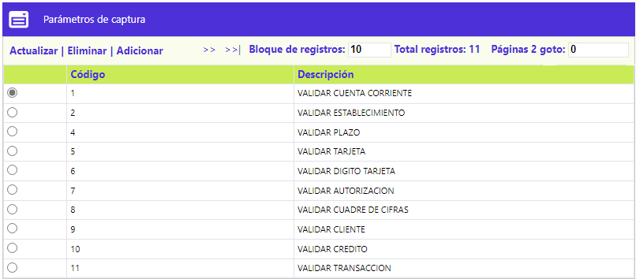
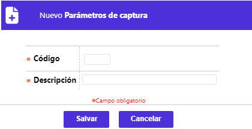

Parámetros de captura
A través de esta opción se permite el mantenimiento y/o consulta, a los funcionarios de OpenCard S.A.S., de la tabla en la cual se relacionan todas las posibles validaciones a realizar en la captura de movimientos de oficinas. El formulario contiene los enlaces: Actualizar, Eliminar y Adicionar.

Adicionar: Al activar ese enlace se despliega el siguiente formulario:

Descripción de campos
|
Código |
Campo numérico de 2 dígitos, obligatorio, que identifica cada una de las posibles validaciones que pueden darse en la captura del movimiento de oficinas. |
|
Descripción |
En este campo alfanumérico de 30 posiciones, obligatorio, se registra el nombre asociado al código anterior. |
Actualizar: Al activar ese enlace se despliega el siguiente formulario, en el cual el único campo modificable es Descripción: